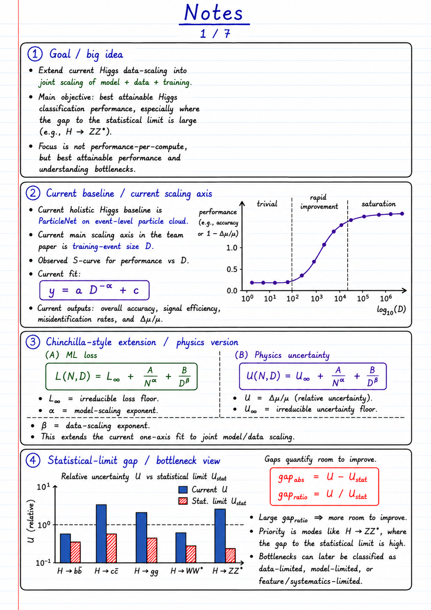

Model size, unique events, training effort, compression and deployment.
AI systems High-energy physics Hardware-aware deployment
Building AI that survives contact with detectors, data, and hardware.
I work at the boundary of machine learning systems and high-energy physics: scaling ParticleNet and ParT-style models, diagnosing statistical-limit gaps, optimizing LHAASO-WCDA GRB pipelines, and compressing models for GPUs, FPGAs, NPUs, and embedded deployment.
Search, decisioning, structure, and multi-objective optimization.
Prioritize hard channels such as H -> ZZ* near the statistical limit.
Research operating system
A portfolio shaped like the work: physics questions flow into AI search, then into deployable systems.
Physics signals
LHAASO-WCDA GRB detection, CEPC/CMS Higgs classification, event-level particle clouds, generator robustness.
AI search layer
Rainbow DQN, distributional RL, knowledge graphs, GFlowNet ideas, MOBO, graph ML, and policy models.
Deployment target
ONNX graph optimization, TensorRT, HLS, pruning, quantization, KD, NAS, GPUs, FPGAs, NPUs, embedded systems.
AutoDeploy thesis direction
Knowledge-driven HEP deployment
A framework for turning physics models into hardware-aware deployment candidates: map objectives, detect constraints, search the Pareto surface, and choose a model that fits accuracy, latency, memory, and accelerator limits.
Knowledge graph
MOBO
Policy search
Hardware constraints
GRB pipeline
LHAASO-WCDA sensitivity
Bayesian optimization and ML pipelines for triggerless gamma-ray burst analysis.
Higgs analysis
CEPC model scaling
ParticleNet and ParT scaling over model size, data size, epochs, features, objectives, and generator effects.
Compression axis
Acceleration after limits
Pruning, quantization, KD, NAS, TensorRT, HLS, and ONNX optimization for practical deployment.
HEP scaling lab
From bigger models to better physics: measure the gap, identify the bottleneck, then improve the right axis.
Joint model-data scaling
Fit model size N and unique events D instead of guessing which axis matters.
Extend Higgs scaling from one data axis into a Chinchilla-style physics view: model size, data size, training effort, features, objective design, generator robustness, optimizer dynamics, and compression are tracked separately.
U(N,D) = U_inf + A / N^alpha + B / D^beta
uncertainty / loss
model size, data, and deployment cost
AI stack
Methods that fit the problem: search, structure, uncertainty, and deployability.
Reinforcement learning
Rainbow DQN and distributional value reasoning
Useful for policy-style decisions in deployment search: choose architectures, compression steps, cut strategies, or scheduling actions while tracking uncertain outcome distributions instead of a single expected value.
Knowledge graph
Structure for models, hardware, objectives, and physics context
A KG can connect model families, accelerator constraints, physics channels, generator settings, score cuts, calibration risks, and prior experiment results.
MOBO
Search the Pareto frontier, not a single score
Multi-objective Bayesian optimization fits hardware-aware ML: accuracy, uncertainty, latency, memory, energy, and compression ratio are all objectives or constraints.
Acceleration
Compress after understanding the performance limit
Scaling asks what is fundamentally achievable; compression asks how to preserve that result while becoming smaller, faster, cheaper, and deployable.
scale
prune
quantize
deploy
Research notebook
Actual working notes behind the portfolio.
These pages capture the current research direction: Higgs scaling, model/data axes, bottleneck diagnosis, generator robustness, score cuts, compression, KD, NAS, and how deployment fits into the physics loop.

Papers and outputs
Published work plus active submissions across HEP, deployment systems, compression, and robotics.
Enhancing GRB detection: Bayesian optimization of triggerless data analysis for LHAASO-WCDA
EPJ Web of Conferences, vol. 337.
doi: 10.1051/epjconf/202533701330Fast lossless image compression for synchrotron radiation facility using deep learning and hybrid architecture
Radiation Detection Technology and Methods, vol. 8(4).
doi: 10.1007/s41605-024-00490-9SECHA: A smart energy-efficient and cost-effective home automation system for developing countries
Journal of Computer Networks and Communications.
doi: 10.1155/2023/8571506A knowledge-driven framework for HEP model deployment on heterogeneous hardware
Submitted to Radiation Detection Technology and Methods.
MCG: A multi-data-center content gateway for topology-hiding and secure WAN storage access
Submitted to IEEE CSCWD.
GL-VINS-Mono: Lidar-assisted monocular visual-inertial odometry in GNSS-denied environments
Submitted to IEEE Robotics and Automation Letters.
Engineering trace
Recent public GitHub repositories.
The cards below load from GitHub in the browser and fall back gracefully if the API is unavailable.
Capability map
A practical stack for AI research that has to run.
Python, C++, Bash, LaTeX, English, Mandarin, Amharic
PyTorch, TensorFlow, graph ML, RL, GFlowNet, AutoML, recommender and policy models
Quantization, pruning, HLS, TensorRT, ONNX graph optimization, NAS, KD
Docker, Linux, Git, CI/CD, orchestration, experiment tracking
NVIDIA GPUs, Xilinx FPGAs, Huawei Ascend NPUs, microcontrollers, embedded systems
Neo4j, MySQL, EOS, SeaweedFS, topology-aware storage access
Contact